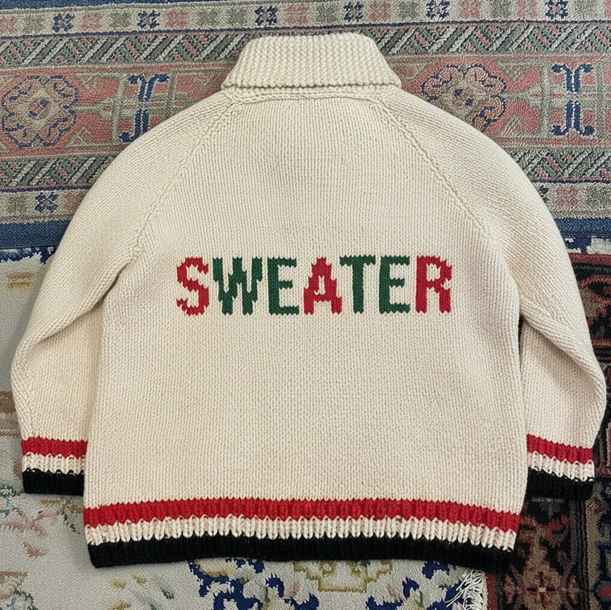

안녕하세요, 라보엠입니다.
오늘은 정준일의 겨울 앨범 EP [Sweater]의 타이틀곡, ‘겨울을 닮은 너’를 소개합니다. 2025년 11월 25일 발매된 이 곡은 정준일이 여러 해 동안 겨울에만 써 내려간 노래들을 모은 프로젝트의 중심에 있는 곡으로, 차갑지만 포근한 겨울 공기와 닮은 사랑의 기억을 섬세하게 담고 있습니다.

겨울 앨범 속 타이틀곡 - 겨울을 닮은 너
EP [Sweater]는 제목처럼 ‘정준일표 겨울 노래’들만 꼭꼭 눌러 담은 미니 앨범입니다. 화려한 캐럴 대신, 스웨터를 겹쳐 입은 듯 따뜻하고 잔잔한 겨울 감성을 담은 곡들이 차분하게 이어지죠. 그 가운데 ‘겨울을 닮은 너’는 밝고 예쁜 멜로디 위에 이별 이후에도 쉽게 지워지지 않는 한 사람을 그려내, 앨범의 정서를 가장 잘 보여주는 중심 트랙으로 자리합니다.
노래는 “햇살이 좋아 문득 하늘을 보다가, 눈부시다는 핑계로 눈물 나던 날 그런 날 있었지”라는 장면으로 시작됩니다. 아무 일 없는 평범한 날, 문득 하늘을 올려다본 순간 예기치 않게 밀려온 그리움에 눈물이 고이는 모습을 너무도 담담하게 그려내죠. “입버릇처럼 난 괜찮아, 난 어제보다 행복해질 거야”라고 스스로를 다독이지만, 그 말이 오히려 아직 끝나지 않은 마음을 더 선명하게 드러냅니다.
뮤직비디오와 ‘겨울 앨범’의 이야기
공개된 뮤직비디오에는 눈 내리는 일본의 풍경 속에 서 있는 인물들의 모습이 잔잔하게 담겨 있습니다. 크리스마스 캐럴처럼 들떠 있지는 않지만, 겨울이면 자연스럽게 떠올리고 싶은, 조용한 계절의 감성이 화면을 채웁니다. 정준일은 이 앨범에 대해 “캐럴은 아니지만 캐럴처럼 밝고 예쁜 겨울 노래를 가득 담고 싶었다”고 밝히며, 스웨터를 겹쳐 입듯 한 곡 한 곡을 차곡차곡 쌓아 올린 작업 과정도 전했습니다.
가사에 담긴 겨울, 그리고 ‘너’
햇살이 좋아 문득 하늘을 보다가
눈 부시다는 핑계로 눈물나던 날 그런 날 있었지
입버릇 처럼 난 괜찮아
난 어제보다 행복해질거야
굳이 나를 위로하던 밤
너도 한번쯤은 나를 생각할까
있잖아 모두 말할 순 없지만
한 겨울 첫눈처럼 우연히 만날 수 있다면
좋은 사람으로 나를 기억할까
여전히 나 미울까
가끔 난 궁금해 여전히 아름다운지
긴하루의 끝 니가 보고싶을때면
한걸음에 달려가 널 안아주던 그런 내가 있었지
“언젠가 우리 헤어져도
친구로 남아 곁에 있어줄래?”
별이 쏟아지던 겨울밤
너도 한번쯤은 나를생각할까
있잖아 모두 말할 순 없지만
한 겨울 첫눈처럼 우연히 만날 수 있다면
좋은 사람으로 나를 기억할까
여전히 나 미울까
가끔은 궁금해 이 노랠 불러봐
눈부신날에 아픈 여름과 지킬 수 없던 봄날의 꿈
빛나던 우리의 겨울이
여전히 내안에 남아
달라 지는 건 없대도
그래도 운명처럼 다시 만날 수 있다면
좋은 사람으로 너를 기억 할게
내가 널 알아볼게
누구보다 따뜻했던
아이같은 나를 사랑해줬던
눈이부시게 겨울을 닮은 너를
이 곡의 인상적인 대목은 계절의 이미지와 지나간 사랑의 기억을 겹쳐 놓은 가사입니다.
“한겨울 첫눈처럼 우연히 만날 수 있다면, 좋은 사람으로 나를 기억할까, 여전히 날 미워할까”라는 부분에서는, 언젠가 우연히 다시 마주하게 될 그날을 조심스럽게 상상하는 마음이 드러납니다. 시간이 흘러도 여전히 그 사람이 아름다운지, 아직 나를 미워하는지 가끔 궁금해하는 솔직한 고백도 이어지죠.
후반부로 갈수록 가사는 더욱 따뜻해집니다.
“아이 같은 나를 사랑해줬던, 눈이 부시게 겨울을 닮은 너를”이라는 마지막 구절은, 차가운 계절 속에서도 누구보다 따뜻했던 그 사람의 모습을 ‘겨울’이라는 단어에 고스란히 담아냅니다. 차갑고 쓸쓸한 계절로만 여겨지던 겨울이, 한 사람을 통해 눈부신 추억의 계절로 바뀌는 순간입니다.
멜로디와 분위기 – 포근하게 감싸는 ‘스웨터’ 같은 사운드
‘겨울을 닮은 너’는 클래식한 발라드 구조 위에 포근한 악기 구성이 더해진 곡입니다. 피아노와 스트링이 중심을 잡고, 기타와 드럼이 과하지 않게 받쳐주며, 전체적으로 따뜻한 겨울 공기 같은 사운드를 만들어냅니다. 정준일 특유의 맑으면서도 살짝 허스키한 보컬은 과장된 고음보다는, 한 단어 한 단어를 눌러 담듯이 부르며 감정을 서서히 쌓아 올립니다.
그 덕분에 이 곡은 눈 내리는 밤 창가, 혹은 조용한 겨울 산책길에 이어폰으로 듣기 좋은 분위기를 자아냅니다. EP 전체를 반복 재생하며 겨울맞이 청소나 하루의 마무리를 함께하고 싶다는 리스너들의 반응도 이어지고 있습니다.
맺음말
‘겨울을 닮은 너’는 차갑고 고요한 계절 한가운데에서, 여전히 마음속에 남아 있는 한 사람을 떠올리게 하는 노래입니다. 눈부시게 밝았던 날들, 아픈 여름과 지키지 못한 봄날의 꿈, 그리고 끝내 잊히지 않는 우리의 겨울까지 모두 끌어안으며, 조용히 묻습니다.
“가끔 난 궁금해, 여전히 아름다운지.”
오늘처럼 공기가 차갑고, 문득 지난 겨울이 떠오르는 날이라면 정준일의 EP [Sweater]와 함께 ‘겨울을 닮은 너’를 들어보세요. 여러분 마음속에도 여전히 눈부신 어떤 계절이, 이 노래와 함께 다시 피어날지 모릅니다.